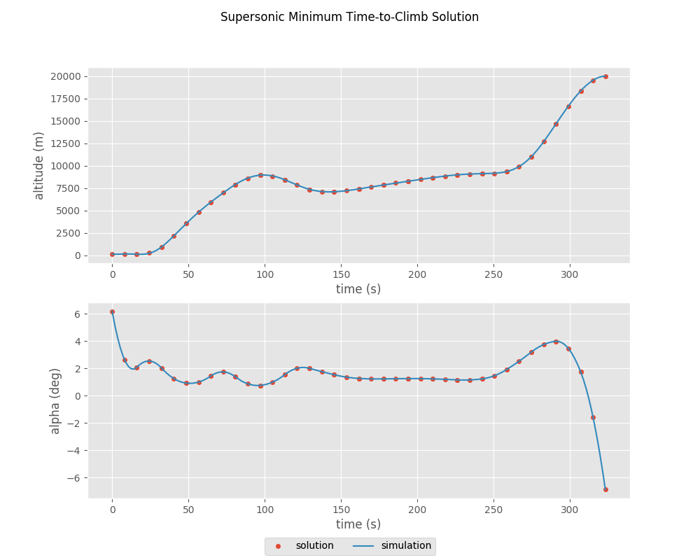

Supersonic Interceptor Minimum Time Climb¶
This example is based on the “A/C Min Time to Climb” example given in chapter 4 of [BrysonDynOpt]. It finds the angle-of-attack history required to accelerate a supersonic interceptor from near ground level, Mach 0.4 to an altitude of 20 km and Mach 1.0.

The vehicle dynamics are given by
\[\begin{split}\frac{d v}{d t} &= \frac{T}{m} \cos(\alpha) - \frac{D}{m} - g \sin(\gamma) \\
\frac{d \gamma}{d t} &= \frac{T}{mv} \sin(\alpha) + \frac{L}{mv} - \frac{g \cos(\gamma)}{v} \\
\frac{d h}{d t} &= v \sin(\gamma) \\
\frac{d r}{d t} &= v \cos(\gamma) \\
\frac{d m}{d t} &= -\frac{T}{g I_{sp}}\end{split}\]
The initial conditions are
\[\begin{split}r_0 &= 0 \, \mathrm{m} \\
h_0 &= 100 \, \mathrm{m} \\
v_0 &= 135.964 \, \mathrm{m/s} \\
\gamma_0 &= 0 \, \mathrm{deg} \\
m_0 &= 19030.468 \, \mathrm{kg}\end{split}\]
and the final conditions are
\[\begin{split}h_f &= 20000 \, \mathrm{m} \\
M_f &= 1.0 \\
\gamma_0 &= 0 \, \mathrm{deg}\end{split}\]
1. The ODE System: min_time_climb_ode.py¶
from __future__ import print_function, division, absolute_import
from openmdao.api import Group
from dymos import declare_time, declare_state, declare_parameter
from ...models.atmosphere import USatm1976Comp
from .aero import AeroGroup
from .prop import PropGroup
from ...models.eom import FlightPathEOM2D
@declare_time(units='s')
@declare_state('r', units='m', rate_source='flight_dynamics.r_dot')
@declare_state('h', units='m', rate_source='flight_dynamics.h_dot', targets=['h'])
@declare_state('v', units='m/s', rate_source='flight_dynamics.v_dot', targets=['v'])
@declare_state('gam', units='rad', rate_source='flight_dynamics.gam_dot', targets=['gam'])
@declare_state('m', units='kg', rate_source='prop.m_dot', targets=['m'])
@declare_parameter('alpha', targets=['alpha'], units='rad')
@declare_parameter('Isp', targets=['Isp'], units='s')
@declare_parameter('S', targets=['S'], units='m**2')
@declare_parameter('throttle', targets=['throttle'], units=None)
class MinTimeClimbODE(Group):
def initialize(self):
self.options.declare('num_nodes', types=int)
def setup(self):
nn = self.options['num_nodes']
self.add_subsystem(name='atmos',
subsys=USatm1976Comp(num_nodes=nn),
promotes_inputs=['h'])
self.add_subsystem(name='aero',
subsys=AeroGroup(num_nodes=nn),
promotes_inputs=['v', 'alpha', 'S'])
self.connect('atmos.sos', 'aero.sos')
self.connect('atmos.rho', 'aero.rho')
self.add_subsystem(name='prop',
subsys=PropGroup(num_nodes=nn),
promotes_inputs=['h', 'Isp', 'throttle'])
self.connect('aero.mach', 'prop.mach')
self.add_subsystem(name='flight_dynamics',
subsys=FlightPathEOM2D(num_nodes=nn),
promotes_inputs=['m', 'v', 'gam', 'alpha'])
self.connect('aero.f_drag', 'flight_dynamics.D')
self.connect('aero.f_lift', 'flight_dynamics.L')
self.connect('prop.thrust', 'flight_dynamics.T')
2. Building and running the problem¶
In the following code we follow the following process to solve the problem:
import matplotlib.pyplot as plt
from openmdao.api import Problem, Group, pyOptSparseDriver, DirectSolver
from openmdao.utils.assert_utils import assert_rel_error
import dymos as dm
from dymos.examples.min_time_climb.min_time_climb_ode import MinTimeClimbODE
from dymos.examples.plotting import plot_results
#
# Instantiate the problem and configure the optimization driver
#
p = Problem(model=Group())
p.driver = pyOptSparseDriver()
p.driver.options['optimizer'] = 'SLSQP'
p.driver.options['dynamic_simul_derivs'] = True
#
# Instantiate the trajectory and phase
#
traj = dm.Trajectory()
phase = dm.Phase(ode_class=MinTimeClimbODE,
transcription=dm.GaussLobatto(num_segments=20, compressed=True))
traj.add_phase('phase0', phase)
p.model.add_subsystem('traj', traj)
#
# Set the options on the optimization variables
#
phase.set_time_options(fix_initial=True, duration_bounds=(50, 400),
duration_ref=100.0)
phase.set_state_options('r', fix_initial=True, lower=0, upper=1.0E6,
ref=1.0E3, defect_ref=1.0E3, units='m')
phase.set_state_options('h', fix_initial=True, lower=0, upper=20000.0,
ref=1.0E2, defect_ref=1.0E2, units='m')
phase.set_state_options('v', fix_initial=True, lower=10.0,
ref=1.0E2, defect_ref=1.0E2, units='m/s')
phase.set_state_options('gam', fix_initial=True, lower=-1.5, upper=1.5,
ref=1.0, defect_scaler=1.0, units='rad')
phase.set_state_options('m', fix_initial=True, lower=10.0, upper=1.0E5,
ref=1.0E3, defect_ref=1.0E3)
phase.add_control('alpha', units='deg', lower=-8.0, upper=8.0, scaler=1.0,
rate_continuity=True, rate_continuity_scaler=100.0,
rate2_continuity=False)
phase.add_design_parameter('S', val=49.2386, units='m**2', opt=False)
phase.add_design_parameter('Isp', val=1600.0, units='s', opt=False)
phase.add_design_parameter('throttle', val=1.0, opt=False)
#
# Setup the boundary and path constraints
#
phase.add_boundary_constraint('h', loc='final', equals=20000, scaler=1.0E-3, units='m')
phase.add_boundary_constraint('aero.mach', loc='final', equals=1.0, shape=(1,))
phase.add_boundary_constraint('gam', loc='final', equals=0.0, units='rad')
phase.add_path_constraint(name='h', lower=100.0, upper=20000, ref=20000)
phase.add_path_constraint(name='aero.mach', lower=0.1, upper=1.8, shape=(1,))
# Minimize time at the end of the phase
phase.add_objective('time', loc='final', ref=1.0)
p.model.linear_solver = DirectSolver()
#
# Setup the problem and set the initial guess
#
p.setup(check=True)
p['traj.phase0.t_initial'] = 0.0
p['traj.phase0.t_duration'] = 500
p['traj.phase0.states:r'] = phase.interpolate(ys=[0.0, 50000.0], nodes='state_input')
p['traj.phase0.states:h'] = phase.interpolate(ys=[100.0, 20000.0], nodes='state_input')
p['traj.phase0.states:v'] = phase.interpolate(ys=[135.964, 283.159], nodes='state_input')
p['traj.phase0.states:gam'] = phase.interpolate(ys=[0.0, 0.0], nodes='state_input')
p['traj.phase0.states:m'] = phase.interpolate(ys=[19030.468, 10000.], nodes='state_input')
p['traj.phase0.controls:alpha'] = phase.interpolate(ys=[0.0, 0.0], nodes='control_input')
#
# Solve for the optimal trajectory
#
p.run_driver()
#
# Test the results
#
print(p.get_val('traj.phase0.t_duration'))
#
# Get the explicitly simulated solution and plot the results
#
exp_out = traj.simulate()
plot_results([('traj.phase0.timeseries.time', 'traj.phase0.timeseries.states:h',
'time (s)', 'altitude (m)'),
('traj.phase0.timeseries.time', 'traj.phase0.timeseries.controls:alpha',
'time (s)', 'alpha (deg)')],
title='Supersonic Minimum Time-to-Climb Solution',
p_sol=p, p_sim=exp_out)
plt.show()

References¶
- BrysonDynOpt
Bryson, Arthur Earl. Dynamic optimization. Vol. 1. Prentice Hall, p.172, 1999.